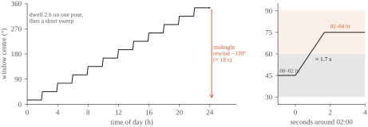
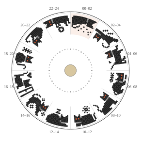

The project began with a light raking across an uneven surface and showing a pattern nobody could see before.
2.1Observation
Directional light reveals what flat light hides.
A low lamp across a carved board brought up a picture that had been invisible in ambient light. A clock offers a natural directional light: an hour hand made of light, sweeping the dial.
2.2Three routes
Only cast shadows give a picture worth reading.
| Contrast lit / unlit | Picture | Depends on | |
|---|---|---|---|
| (a) | ≈ 2–4 : 1 | soft, low | surface angle only |
| (b) | ≈ 2–4 : 1 | frames bleed | sweep speed |
| (c) | shadow ≈ 0 | crisp silhouette | light position |
(a) and (b) only change how bright a face looks, so a feature differs from its neighbour by the cosine of a small angle. In (c) a region is either reached by the light or not; the picture is as dark as the room allows.
2.3A cat's day
Twelve poses, one per two hours, read clockwise from midnight.
Twelve sectors leave no empty gaps between images, and a 24-hour turn gives each pose two hours. The cats stand with their feet toward the rim, so each is upright when its sector is at the bottom of the beam's sweep.
2.4Dwell, then sweep
The beam waits on a pose and moves in seconds.
A continuously turning beam would light half of one cat and half of the next most of the time. The stepper therefore holds each window for two hours and moves 30° in about two seconds; at midnight it rewinds once.

